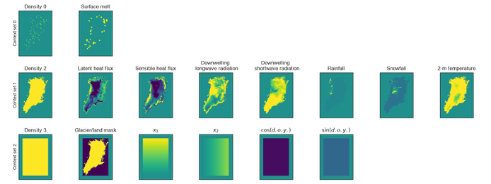

What is a Convolutional Neural Process?
Our model is a convolutional neural process (ConvNP; Gordon et al., 20201), a type of neural network designed for scattered environmental observations:
Andersson et al. (2023)2 trained these models on climate model data to guide where to place new sensors in Antarctica. We follow the same approach for Greenland surface melt, using their open-source DeepSensor package.
How does the model encode the inputs?

Architecture
Our convolutional neural process (ConvNP) has three parts. An encoder places the sparse surface melt context points and the gridded inputs onto a common internal grid, a U-Net processes that grid, and a decoder outputs a predictive distribution of surface melt at every target location. The model has about one million trainable parameters.
- U-Net: four layers of 64 channels each, with 5 × 5 convolution kernels.
- Decoder: 64 basis functions.
- Likelihood: a zero-inflated Bernoulli-Gamma distribution. It gives the probability that any melt occurs and, when it does, a gamma distribution over how much, so the model can predict exactly zero melt as well as a spread of positive values with their uncertainty.
Training regime
The HIRHAM5 record is split by year, so the model is always evaluated on years it has not seen:
- Training: 1990–2013.
- Validation: 2014, used to choose the best model and decide when to stop training.
- Test: 2016, held out for evaluation and the sensor placement search.
Most days outside summer have little or no melt, so we do not train on every day. Following Schlager et al. (2026), each year contributes 150 days, sampled with a weighting that peaks on 24 July, the height of the melt season, and falls off over about two months either side. These days stay fixed across epochs.
Each training example is one day. Its context set holds between 100 and 400 surface melt points: 10% are at PROMICE station locations and the rest are spread at random across the Greenland ice mask. The model is asked to predict melt at every grid cell. Context points are drawn afresh each epoch, so the model learns to cope with many different observing networks rather than memorising one.
The validation days are scored in two ways:
- Random context: 100–400 points across the ice mask, fixed between epochs so scores are comparable.
- Station context: only the current PROMICE station locations, matching how the model is used for sensor placement. The weights that score best here are the ones used in the placement experiments.
Training settings
- Optimiser: Adam with a constant learning rate of 3 × 10−4 and weight decay of 10−4.
- Loss: negative log-likelihood of the true melt values under the predicted Bernoulli-Gamma distribution.
- Batch size: one day per optimisation step.
- Epochs: up to 100, stopping early if the validation loss has not improved for 20 epochs.
- Checkpointing: the best weights by validation loss and by station-context validation loss are kept separately.
Runs are tracked in Weights & Biases, which records losses, error metrics (RMSE, MAE, NLL), prediction maps and calibration (PIT) histograms during training.